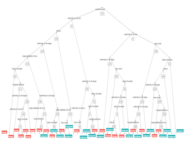
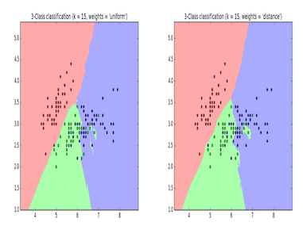
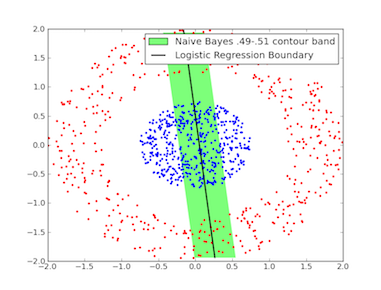
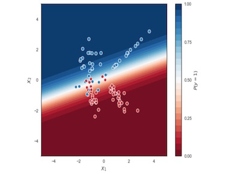

Welcome To Our Site
![Decision Tree, a form of supervised learning, is widely used to support making decisions by generating a tree-like graph.
The decision tree is very natural to human. A decision is made by walking down the tree from the root. At each level, a decision node specifies a choice of some attribute with two or more alternatives. Every decision node is part of a path to a leaf node which indicates the classification of a data set.
To construct a Decision Tree consistent with the training example, Decision Tree learning algorithm is used. The idea is to recursively choose the most significant attribute as root, and then use a top-down greedy search through the space of possible Decision Tree. The significance of the attribute is determined by something called “Information Gain” which is calculated by using the concept of “Information Entropy”.](img/portfolio/item.jpg)
![Similar to decision tree, a Random Forest algorithm is a supervised classification algorithm working as a large collection of decorrelated decision trees. Instead of only one tree as with Decision Tree, many Decision Trees are used in Random Forest Algorithm. Also, instead of using information gain and gini index for calculating the root node, finding the root node and splitting the feature nodes will be randomized.
To construct a Random Forest from a sample, the concept of bagging is used. The bagging is to average noisy and unbiased models in order to create a model with low variance. The basic idea is to divide the sample into M subsets, and then create M decision trees with the corresponding data using Random Forest Algorithm.
To make a decision using Random Forest, an instance is feed into the root of each sub-decision tree. Sub-trees will then produce classifications from each one of them. The final prediction is based on majority voting among the classifications of Decision Trees.](img/portfolio/item2.jpg)
![The k-nearest neighbors algorithm is a supervised learning, non-parametric method used for classification. The idea of clustering is used to group a set of objects in a way that objects in the same group are more similar to each other than those in other groups.
In k-NN algorithm, the classification of a new data point is based on the “distance metric” to k nearest neighbors in the training data set. Then, this new object is classified by a majority vote of its neighbors.
Correctly choosing the k factor determines the total accuracy of such algorithm. To gain optimal value of k, we can segregate the training set and validation set from the initial data set. Then, plot the validation error curve to obtain the optimal value of k at the minimal error point.](img/portfolio/item3.jpg)
![In machine learning, Naïve Bayes method forms a group of simple probabilistic classifiers by applying Bayes’ theorem with strong independence assumptions between the features.
Given a small set of training data, Naïve Bayes classifiers can be trained very efficiently in a supervised learning setting. To estimate the parameters for naïve Bayes models, the idea of maximum likelihood is used, meaning one can work with the naïve Bayes model without accepting Bayesian probability or applying Bayesian methods.](img/portfolio/item4.jpg)
![Logistic regression was developed by David Cox, which is used to estimate the probability of a binary response based on one or more predictor variables. In the regression model, the dependent variable is categorical. It allows one today that the presence of a risk factor increases the odds of a given outcome by a specific factor.
The logistic regression is simple to implement and easy to compute. However, the decision boundary has to be linear (i.e. separable by a hyperplane). It could also end up being a feature selection problem as well. This is the problem we need to consider when using logistic regression.](img/portfolio/item5.jpg)
![Artificial neural networks (ANNs) or connectionist systems are computing systems inspired by the biological neural networks that constitute animal brains. Such systems learn (progressively improve performance on) tasks by considering examples, generally without task-specific programming.
To construct a neural network, we consider it as a collection of connected units called artificial neurons. Each connection between neurons can transmit a signal from one to another. The receiving neuron can process the signals and then signal neurons connected to it.
In order to learn multi-layer neural nets, we consider the backpropagation algorithm for training such networks.](img/portfolio/item6.jpg)
{kind=link}
{kind=link}
{kind=link}
{kind=link}
{kind=link}
{kind=link}
Case Study
To answer two questions mentioned in the introduction of this report, we first searched raw data on Machine Learning Repository. We obtained the Mammographic Mass Data Set which is published by Image Processing and Medical Engineering from Fraunhofer Institute for Integrated Circuits in Germany. Our goal is to apply six machine learning models to this data, and measure the success of results based on the cross-validation value between each trained model and the data set. We want to see if our models can beat the human radiologists’ positive diagnosis which is round 70%, and to conclude which model works the best for the sample data.
-
![After having proper input, we can now start feeding data into Decision Tree model. This can be done by importing sklearn package into Jupyter, a python based language.
First of all, we split the data set into 75% training set and 25% testing set by applying “train-test-split” function. After this, we simply used “DecisionTreeClassifier()” function to generate a Decision Tree Classifier, and then simply call on the result of this function by using “fit (training_features_input, training_target_input)”. Finally, to show the result graphically, we simply call graphing functions to draw the decision tree.
With the decision tree constructed, it is very easy to measure the accuracy of this decision tree model by using test set data. The cross-validation score can be calculated by calling function “score( testing_features_input, testing_targets)”. The result we got for this method is 0.735577.](img/portfolio/itema.jpg)
Decision Tree
-

Random Forest
-

KNN algorithms
-

Naive Bayes
-

Logistic Regression
-

Neural Network
{kind=link}
{kind=link}
{kind=link}
{kind=link}
{kind=link}
{kind=link}
Suprisingly, decision tree is the worst!
Logistic regression and KNN are the best!
Real-world Practice
how does deep-learning influnce the medical field
Artificial Intelligence Eyed as Diabetic Retinopathy Screen
Accuracy of Artificial Intelligence Assessed in CA Diagnosis
Deep-learning algorithms help study brain waves to predict seizures
Medical Imaging Drives GPU Accelerated Deep Learning Developments